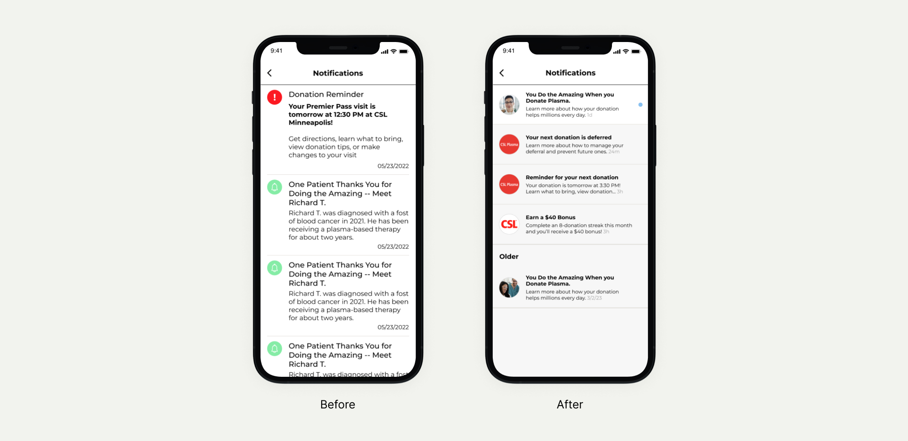
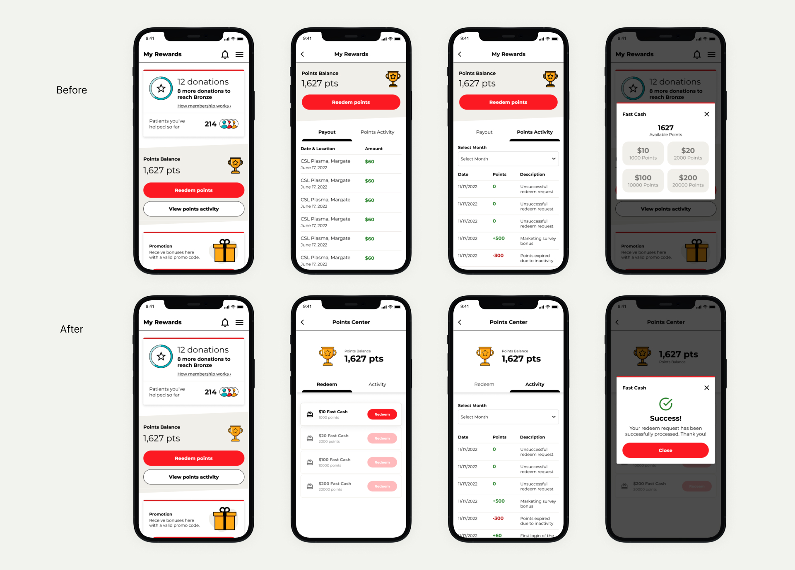
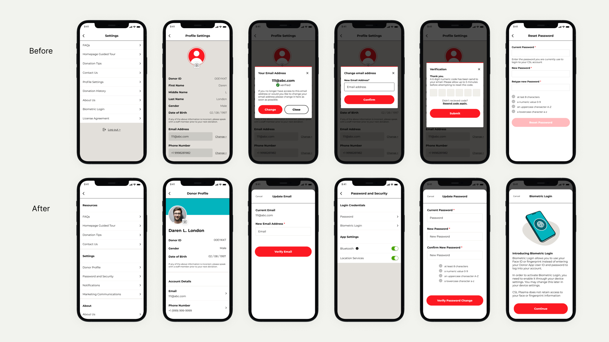

☼
-
Home / Product / CSL / CSL Research
Evaluating a critical user flow for fleet-wide release.
-
Skills
UX Research
UX Design
Prototyping
UI Design -
Duration
July - August 2023
-
Tools
Figma
Microsoft Office
Confluence/Jira
-

-
CSL was preparing to introduce appointments to their long-established walk-in plasma donation process. This project was conducted to streamline that transition.
-
• Context
A new way for people to donate plasma.
-
CSL has always conducted plasma donations on a walk-in basis. However, there was a push from business stakeholders to introduce an appointment scheduling capability to their locations. As the only touchpoint between CSL and plasma donors outside physical centers, the Plasma app was leveraged as the medium to introduce this functionality.
Having already designed baseline screens for the new flow, there was a push to test and improve before production caught up, so that the transition from walk-in to appointment would be as smooth as possible. -
• Overview
Contributing to the first in-house usability testing at CSL Behring.
-
I developed a comprehensive technology usage guide for a group of 10 participants, offering them clear instructions and best practices for effective utilization. Additionally, I designed a fully functional prototype, ready for testing, to ensure a seamless user experience. During this process, I actively contributed to research synthesis, analyzing data and feedback from the participants, which allowed me to make necessary design modifications to enhance the overall user interface and experience.
-
• Results
10 participants, 2 rounds of testing, massively improved designs.
-
Through two rounds of testing, we were able to identify areas to improve the existing designs, areas to put back to the drawing board, and areas to scrap completely. We also established protocol for future trials and, more importantly, validated the importance of user input during the design process.
-   
-
• EU Documentation
Creating crucial documentation to prepare for a new app launch
-
Two extensive projects completed over a month to document all screens and interactions of the EU-facing Plasma donor app.

Robust testing prototype
A prototype that can be messed with, as live as a production app without the hassle of screen-sharing.
Navigate between flows
Quick navigation between different flows utilized at different points in the testing process.


Editable data
Live data using Figma's variable and conditional prototyping to increase realism and personalization.